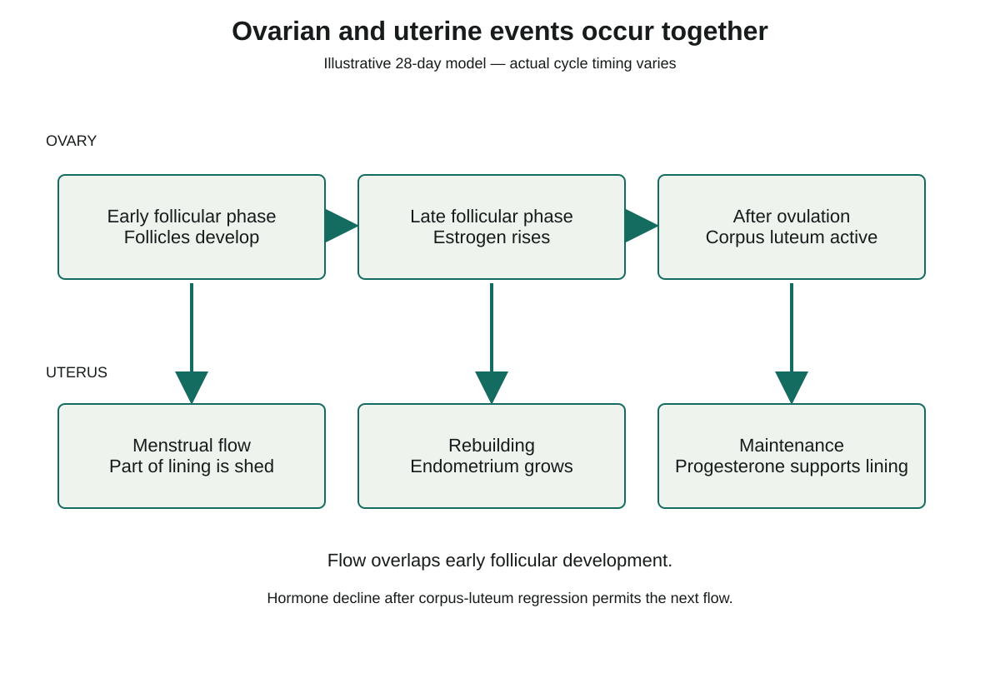

Two locations can change at the same time
A developing is in an . The is the lining of the . A cycle description becomes confusing if those two locations are treated as one structure with one set of events. We will follow the ovarian structures and uterine lining together, then explain the hormonal connection between them.
The ovarian cycle includes follicle development, and corpus-luteum activity. A follicle contains an oocyte and supporting cells. Ovulation releases the ; remaining follicular tissue can form the . The uterine cycle describes changes in the endometrium, including shedding, rebuilding and maintenance of the lining.
Hormones provide a link between the organs. Developing follicles release , which helps the endometrium grow. After ovulation, the corpus luteum releases and some estrogen, supporting the prepared lining. The hormones travel in blood; the follicle and corpus luteum remain in the ovary.
In the illustrative 28-day model used here, day 1 is the first day of menstrual flow and ovulation is placed near day 14. These numbers help align the drawings. They are not a timetable for every person or a way to identify guaranteed pregnancy-free days. A stated biological event is stronger evidence for a phase boundary than an assumed calendar number.
Menstrual flow overlaps early follicular activity
The is the ovarian phase before ovulation. The is the ovarian phase after ovulation, when the corpus luteum is active. , or menstrual flow, is the shedding of part of the uterine lining. It names a uterine event, not a third ovarian phase that must finish before follicles can develop.
Near the end of a cycle without pregnancy support, the corpus luteum regresses and its progesterone and estrogen output falls. The endometrium loses hormonal support and part of it is shed. The first day of that flow is counted as day 1 of the next cycle.
As the previous cycle's ovarian-hormone restraint declines, follicle-stimulating hormone, , can support development of follicles in the ovary. This activity can already be underway when flow begins. Thus a uterus shedding lining and an ovary developing follicles are compatible observations, not evidence that one of the observations must be wrong.
As follicular estrogen output rises, it helps rebuild the endometrium. The new follicle does not cause the preceding hormone withdrawal merely because its development overlaps flow. Keep the sequence of causes separate from the fact that two events occur at the same time.
The teacher slides list flow and a later follicular interval as successive teaching landmarks. For ovarian phase names, however, include the early flow days within the follicular phase. This preserves the distinction between which organ is being described and when the event occurs.
Ovulation changes the main ovarian structure
Ovulation marks the transition from the ovarian follicular phase to the luteal phase. It is the release event, not the number 14 itself, that defines the boundary. If a stated model places ovulation later, the phase boundary moves with that event.
After release, the follicular tissue left in the ovary becomes the corpus luteum. Its progesterone, together with estrogen, helps maintain and prepare the endometrium for possible implantation. An early embryo would implant in this lining later; ovulation itself is neither fertilization nor implantation.
Read the retained diagram in rows first. The top row follows ovarian events from early follicular development, through later development, to an active corpus luteum after ovulation. The bottom row follows uterine flow, rebuilding and maintenance. Then compare the paired boxes in each column to see events that overlap in time.
The vertical arrows connect the ovarian and uterine rows for comparison. In the first column, read the link as overlap: developing follicles do not directly cause menstrual flow. Flow follows the preceding fall in ovarian-hormone support, as the note below the diagram states. In the later columns, estrogen and progesterone explain the hormonal links to growth and maintenance. The boxes are not drawn to give exact durations.
The diagram therefore supports two kinds of reading: left-to-right sequence within one organ, and simultaneous or hormonally connected events across organs. Neither arrow direction means that a follicle, oocyte or corpus luteum travels down into the uterine lining.
Coordinating two cycles

Flow is a uterine event that overlaps the early ovarian follicular phase. This is a sequence model, not a personal calendar.The end of one cycle helps explain the start of the next
If pregnancy is not established, corpus-luteum activity declines. Progesterone and estrogen fall, the lining is no longer maintained in the same way, and menstrual flow follows. This hormone sequence connects the later luteal phase with the next cycle's day 1.
An unfertilized oocyte has a limited viable life after ovulation. Its loss does not instantly stop corpus-luteum hormone production. The retained tissue can remain active for days afterwards, which is why an explanation of flow timing must follow the hormone-producing tissue rather than the egg alone.
A hormonal connection also requires a responsive target. An ovarian source can release a hormone into blood while a uterine tissue fails to make its usual response. To explain a new observation, identify the source, the signal, the target and the target's normal job before deciding which part of the relationship has changed.
The core sequence is now connected: follicular estrogen helps rebuild the lining, luteal hormones support it after ovulation, and their later decline permits shedding. We will next read the changing pituitary and ovarian hormone patterns that coordinate this sequence.
Worked example
A normal signal with a changed uterine response
In a stated model after ovulation, the corpus luteum releases progesterone normally, but the endometrium cannot make its usual response to that hormone. Does normal ovarian output alone establish normal maintenance of the lining?
- Identify the source and signal: the corpus luteum is in the ovary and releases progesterone into blood. The model keeps that output normal.
- Identify the target: the endometrium in the uterus. Its usual response to progesterone helps maintain and prepare the lining after ovulation.
- Apply the changed condition. A signal's presence does not supply the missing target response. Normal progesterone output alone therefore cannot establish normal progesterone-dependent maintenance.
- Check the conclusion's limits. The model does not say that ovulation failed, the corpus luteum moved into the uterus or all other hormone responses stopped. It also does not give enough information to predict an exact day of bleeding. The specific failed link is signal-to-target response.
Optional application
A hypothetical cycle record states that ovulation occurred on day 18. On day 16 a follicle was still developing and estrogen was rising. Which ovarian phase fits day 16, and what uterine change would estrogen normally support? Explain why simply calling every day after 14 luteal would misread this record.
Answer withheld for first attempt
Practise with support
Apply the explanation
Try both questions. Use the hint to revise your thinking after an incorrect answer.
Stop and think
Try this before opening the explanation
Does an oocyte’s failure to be fertilized cause menstruation the next day?
Answer withheld for first attempt
Open required check · Coordinating the ovarian and uterine cycles
Explain what you have learned
This check counts toward chapter progress. Correct the 2 selections to unlock 2 written explanations. Saving writing records your response; it does not grade its accuracy.
Not started